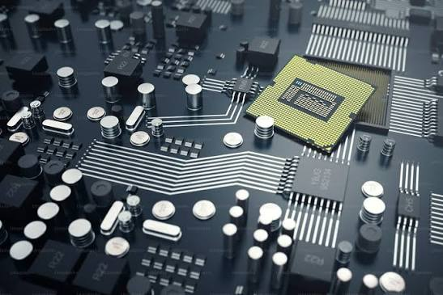

Future Paths in Electrical Fundamentals
Electrical Fundamentals provides the foundation for understanding how electrical energy is generated, distributed, controlled, and used.
From electronic devices and industrial machinery to power grids and renewable energy systems, these concepts play an essential role in modern technology and infrastructure.
01. Basic Circuit Analysis

Basic Circuit Analysis explores how voltage, current, resistance, and power interact within electrical circuits. Understanding these relationships is essential for analyzing, designing, and troubleshooting electrical and electronic systems.
Electronics & Engineering
Design and analyze electronic circuits used in computers, communication devices, and control systems.
Renewable Energy
Analyze electrical circuits in solar panels, battery systems, and energy-conversion equipment.
Industrial Automation
Understand the electrical circuits used in sensors, controllers, automated machinery, and R&D.
Learning circuit analysis develops the ability to understand how electrical systems behave, identify faults, and design circuits that perform specific functions.
02. Alternating Current (AC) Theory
Alternating Current (AC) Theory explores how voltage and current vary periodically with time. Concepts such as frequency, phase, impedance, and power factor are essential for understanding the operation of modern electrical equipment and power systems.
- Power Generation & Distribution — Understand the principles behind the generation and transmission of AC electrical power.
- Electrical Engineering — Analyze AC circuits and design systems involving resistors, capacitors, and inductors.
- Industrial Machinery — Understand the electrical behaviour of motors, transformers, and other AC-powered equipment.
- Renewable Energy — Work with inverters and electrical systems that convert and distribute power from solar and other energy sources.
- Telecommunications — Apply AC principles to signal transmission and the operation of electronic communication systems.
- Electrical Maintenance — Diagnose issues involving voltage, current, frequency, impedance, and power quality.
Understanding AC theory helps explain how electrical energy is generated, transmitted, and utilized in most modern power systems.
03. Three-Phase Circuits

Three-phase circuits use three alternating voltages with a phase difference of 120 degrees to deliver electrical power efficiently. They are widely used in industrial equipment, large electrical installations, and electricity distribution networks.
Industrial Manufacturing
Supply power to heavy machinery, production lines, and industrial motors.
Power & Renewables
Integrate wind turbines, solar inverters, and traditional generators into three-phase electrical networks.
HVAC & Transportation
Understand three-phase systems used in electric motor drives, compressors, and EV charging infrastructure.
Learning three-phase circuits helps you understand how large amounts of electrical power are delivered and used efficiently in modern industrial and commercial systems.
04. Circuit Protection and Basic Electrical Safety
Circuit protection and electrical safety focus on identifying electrical hazards and understanding the devices and principles used to prevent electrical faults from causing injury, equipment damage, or fires.
- Electrical Engineering — Understand the selection and operation of fuses, circuit breakers, and other protective devices.
- Industrial Safety — Reduce electrical hazards in factories, workshops, and industrial facilities.
- Power Distribution — Protect electrical networks against overloads, short circuits, and other abnormal conditions.
- Building Services — Understand the protective measures used in residential, commercial, and institutional electrical systems.
- Equipment Maintenance — Identify electrical faults and understand the role of protective devices in preventing further damage.
- Renewable Energy Systems — Apply appropriate protection principles to solar installations, battery systems, and other electrical equipment.
Understanding circuit protection is essential for preventing electrical accidents, protecting equipment, and maintaining the reliability of electrical systems. Practical electrical work must always follow applicable safety standards and be carried out by appropriately qualified personnel.
05. Electrical Installations & Safety Systems
Electrical installations and safety systems involve the practical application of electrical principles in buildings and other facilities. They cover how electrical power is distributed, connected, controlled, and protected to ensure safe and reliable operation.
Building Services
Design and maintain electrical installations for residential, commercial, and industrial buildings.
Smart Buildings
Integrate electrical installations with automated lighting, energy management, and building control systems.
Facilities Management
Plan machinery installations, maintain infrastructure, and coordinate critical fire & life safety procedures.
This knowledge connects electrical theory with practical applications, helping you understand how safe, reliable, and efficient electrical installations are designed, operated, and maintained.
Electrical Fundamentals bridges the gap between basic circuit concepts and the electrical systems that power modern society. By understanding circuits, AC power, three-phase systems, and electrical safety, you build a foundation for exploring electrical engineering, industrial automation, power generation, building services, and renewable energy.